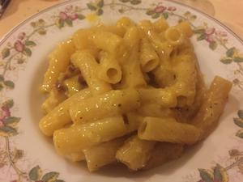

Ricetta Originale della Carbonara
Tempo: 30 min
Difficoltà:facile
Porzioni: 4 persone
Calorie: 579kcal/porz
Presentazione
La ricetta degli spaghetti alla carbonara è una delle più note ricette di pasta della cucina romana. Si tratta di un piatto povero, dalle origini controverse, la cui versione originale prevede l’ utilizzo come ingredienti di uova, guanciale e pecorino romano grattugiato. Come per tutti i piatti della tradizione culinaria italiana, esistono però diverse varianti alla pasta alla carbonara classica, che includono l’uso di ingredienti non previsti dalla versione originaria della ricetta, come la panna o la pancetta. Il formato di pasta più comune sono gli spaghetti, ma non è raro trovare ottimi piatti di pasta alla carbonara in cui viene utilizzata pasta corta come rigatoni o penne.
Ingredienti
- 400 g. di spaghetti
- 150 g. di guanciale
- 4 uova
- 100 g. di pecorino romano grattugiato
- un cucchiaino di olio EVO
- sale QB
- pepe nero macinato o pestato al momento Q.B.
Preparazione
- Tagliate il guanciale a striscioline.
- Cuocete gli spaghetti in abbondante acqua leggermente salata.
- Sbattete le uova con il formaggio in una ciotola adatta a contenere la pasta.
- Fate dorare il guanciale con l'olio in una padella a fuoco moderato, cercando di non farlo seccare.
- Scolate la pasta, fatela saltare un minuto nella padella con il guanciale.
- Versatela nella ciotola con le uova, e iniziate a mescolare velocemente e con un minimo di energia; in questo modo le uova cuoceranno amalgamandosi con gli altri ingredienti e si trasformeranno in una morbida crema senza grumi.
- Servite subito gli spaghetti alla carbonara, spolverando ogni piatto con del pepe nero macinato o pestato al momento.
Commenti
Ottima spiegazione, bravissimi, grazie. Avevo bisogno di lumi, nelle tenebre della mia ignoranza ambrosiana, che mi vedeva alle prese con ingredienti improbabili, che non citerò per dignità! Grazie ancora e complimenti.
Matteo
guanciale croccante, pastello densissimo di tuorlo pepe parmiggiano e pecorino romano (o pecorino stagionato dolce senza parmigiano) , mantecatura a 80° o poco meno mentre si aggiunge albume montato a neve q.b.
Federico
le varianti sono tante ma ....il vero segreto è il pecorino che utilizzate
Dante
Link
Cerca altre ricette romane
Home page